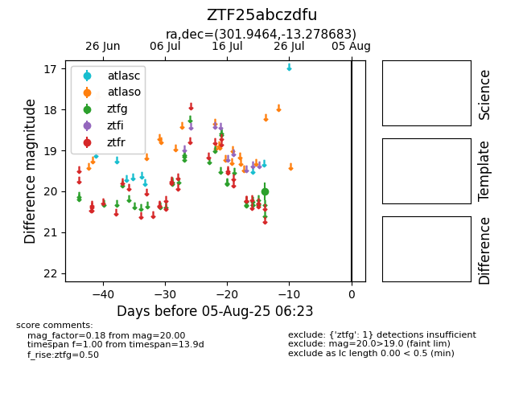

Target ZTF25abczdfu at 2025-08-05 07:33, see:
FINK: fink-portal.org/ZTF25abczdfu
Lasair: lasair-ztf.lsst.ac.uk/objects/ZTF25abczdfu
ALeRCE: alerce.online/object/ZTF25abczdfu
alt names
ZTF25abczdfu (ztf,fink)
coordinates:
equatorial (ra, dec) = (301.9464,-13.27868)
galactic (l, b) = (29.2431,-22.82894)
photometry
last ztfg=20.00
1 ztfg detections
